User Settings#
The User Settings page allows you to customize your Backend.AI WebUI experience. You can access it by clicking the person icon at the top right and selecting the Preferences menu. From here, you can configure preferences such as theme mode, language, desktop notifications, SSH keypair management, shell scripts, and experimental features. You can also review the client-side logs, the login sessions currently signed in to your account, and your login history.
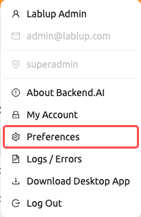
The page is organized into four tabs: General, Logs, Login Sessions, and Login History.
General tab#
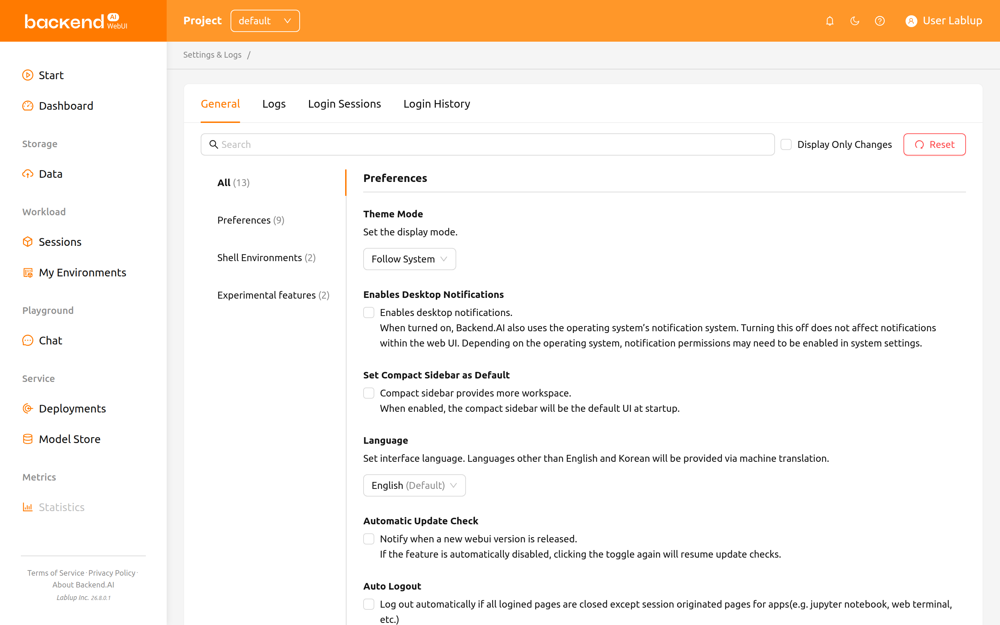
The General tab contains all preference settings organized into groups: Preferences, Shell Environments, and Experimental features. The list on the left lets you jump to a single group, or select All to see every setting at once.
Searching and filtering settings#
At the top of the settings area, you can use the search bar to quickly find a specific setting by name. Type a keyword, and only matching settings will be displayed.
You can also check the Display Only Changes checkbox to filter the list and show only settings that have been modified from their default values. This is useful for reviewing all customizations you have made at a glance.
Resetting settings to default#
To restore all settings to their default values, click the Reset button at the top of the settings area. A confirmation dialog appears before the reset is applied, warning you that the action cannot be undone.
Each individual setting also has its own reset button (displayed when the value differs from the default), allowing you to reset a single setting without affecting others.
Theme mode#
Select the display mode for the WebUI. You can choose from:
- Follow System: Automatically matches your operating system's light or dark mode setting.
- Light Mode: Always use the light theme.
- Dark Mode: Always use the dark theme.
Theme#
A theme is a color family that Backend.AI applies across the whole WebUI, in both light and dark mode. When theme selection is available, the Theme setting lets you pick one of the built-in themes that ship with the product:
- Default: The standard look, built from the colors configured for your installation.
- Stained
- Glass
- Reverie
- Bliss
The selected theme is applied immediately, and the choice is remembered for your account. Click the setting's reset button to go back to Default.
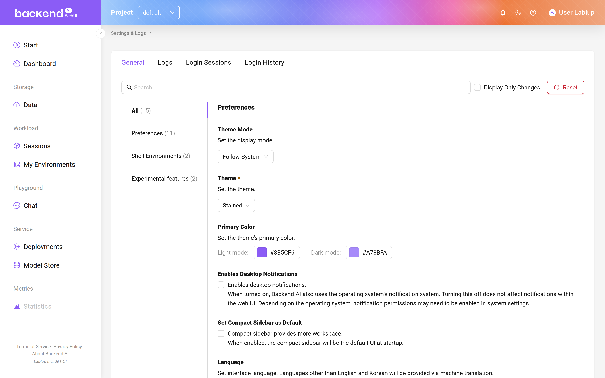
The Theme setting appears only when your administrator has enabled theme customization and more than one theme is available for your installation. The set of themes offered can therefore differ from the list above.
Primary color#
Primary Color overrides the main accent color of the selected theme. Two color pickers are provided — one for Light mode and one for Dark mode — so each display mode can use a different accent color.
- Click the color swatch of the mode you want to change
- Choose a color from the picker, or enter a hex value
- The new accent color is applied to the WebUI immediately
Clear a picker to fall back to the color that the selected theme provides for that mode. Clicking the setting's reset button clears both modes and restores the theme's own colors.
Like the Theme setting, Primary Color appears only when your administrator has enabled theme customization.
Enables desktop notifications#
Enables or disables the desktop notification feature. When turned on, Backend.AI uses the operating system's notification system in addition to in-app notifications. Turning this off does not affect notifications within the web UI. Depending on the operating system, notification permissions may need to be enabled in system settings.
Set compact sidebar as default#
When this option is on, the left sidebar will be shown in a compact form (narrower width). The change is applied when the browser is refreshed. If you want to immediately change the sidebar type without refreshing the page, click the leftmost icon at the top of the header.
Language#
Set the interface language. The language selector is a searchable dropdown that lists 20 languages: English, 한국어 (Korean), brasileiro (Brazilian Portuguese), 简体中文 (Simplified Chinese), 繁體中文 (Traditional Chinese), Français (French), Suomalainen (Finnish), Deutsch (German), Ελληνική (Greek), Bahasa Indonesia (Indonesian), Italiano (Italian), 日本語 (Japanese), Монгол (Mongolian), Polski (Polish), Português (Portuguese), русский (Russian), Español (Spanish), ภาษาไทย (Thai), Türkçe (Turkish), and Tiếng Việt (Vietnamese). You can type in the dropdown to filter and quickly find a language.
The language that matches your browser's default is indicated with a "(Default)" label next to its name. Languages other than English and Korean are provided via machine translation. Some UI items may not update their language before the page is refreshed.
Some translated items may be marked as __NOT_TRANSLATED__, which
indicates the item is not yet translated for that language. Since Backend.AI
WebUI is open sourced, anyone willing to help improve translations
can contribute: https://github.com/lablup/backend.ai-webui.
Keep login session information while logout#
This setting is only available in the Electron (desktop) app.
When enabled, the WebUI app preserves your current login session information for the next app launch. If the option is turned off, login information will be cleared each time you log out.
Automatic update check#
A notification window pops up when a new WebUI version is detected. It works only in an environment where Internet access is available. If the feature is automatically disabled, clicking the toggle again will resume update checks.
Auto logout#
Log out automatically when all Backend.AI WebUI pages are closed except for pages created to run apps in a session (e.g. Jupyter Notebook, web terminal, etc.).
My keypair information#
Every user has at least one keypair. You can view your access key and secret key
by clicking the Config button. Remember that only one main access keypair exists.
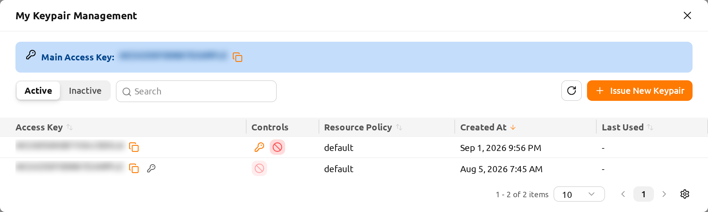
At the top of the dialog, the Main Access Key banner shows your current main access key. Click the copy icon next to it to copy the key to your clipboard.
Browsing your keypairs#
The dialog lists your keypairs in a table. Use the controls above the table to narrow down what is shown:
- Active / Inactive toggle: Switch between viewing active keypairs and deactivated keypairs.
- Filter: Filter the list by Access Key or Resource Policy.
- Column sorting: Sort the table by Access Key, Resource Policy, Created At, or Last Used by clicking the column header.
- Pagination: Move between pages when you have more keypairs than fit on a single page.
The table includes the following columns:
- Access Key: The keypair's access key. Your main access key is flagged with a key icon. Click the copy icon to copy the access key.
- Controls: The actions available for each keypair (see below).
- Resource Policy: The resource policy applied to the keypair.
- Created At: When the keypair was created.
- Last Used: When the keypair was last used.
- Modified At: When the keypair was last modified. This column is hidden by default; you can show it through the table column settings.
Issuing a new keypair#
Click the Issue New Keypair button to create a new keypair. After the keypair is issued, the Keypair Credential Information dialog appears, showing the new credentials one time only.
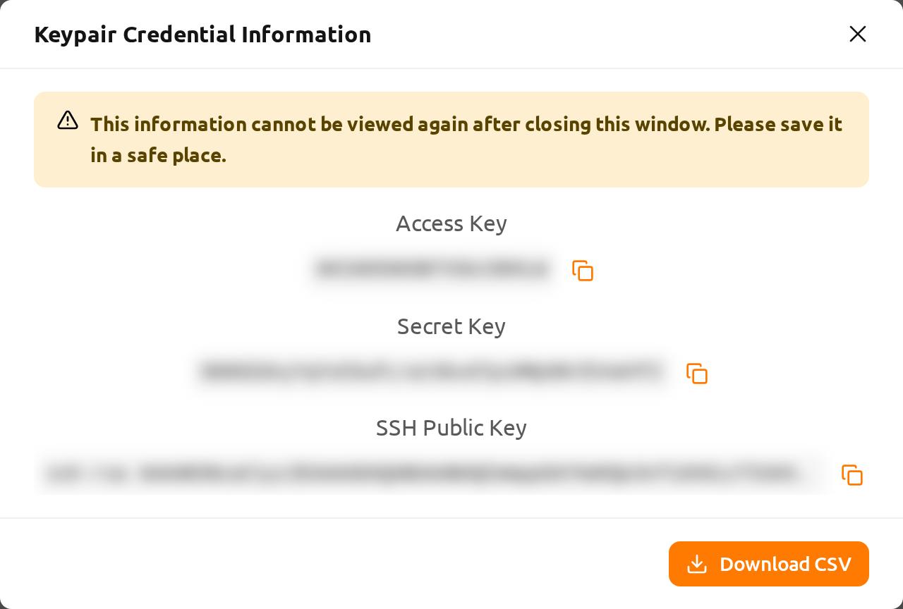
The dialog reveals the following values, each with a copy button:
- Access Key
- Secret Key
- SSH Public Key
Click Download CSV to save the credentials to a file.
"This information cannot be viewed again after closing this window. Please save it in a safe place." The secret key is shown only once. Copy it or download the CSV before you close the dialog — there is no way to retrieve the secret key afterward.
Managing active keypairs#
For each active keypair, the Controls column provides these actions:
Set as Main: Make this keypair your main access key. A confirmation prompt appears before the change is applied. The current main access key already in use does not show this action.
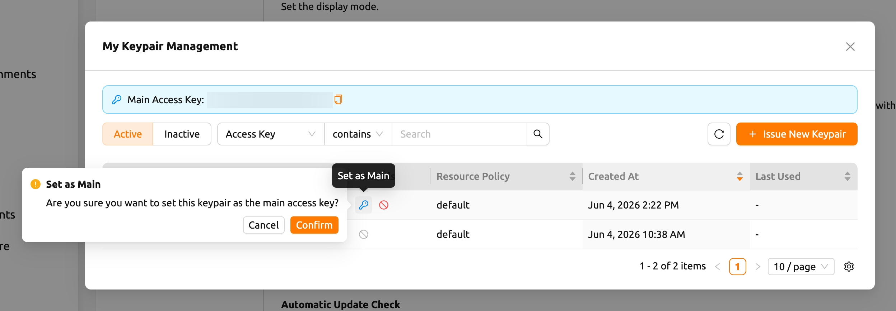
Figure 19.6 Deactivate: Deactivate the keypair so it can no longer be used. A confirmation prompt appears before the keypair is deactivated. The main access key cannot be deactivated — switch to another key first ("Cannot deactivate the main access key. Switch to another key first.").
When the main access key changes (for example, after issuing a new keypair and setting it as the main one), the WebUI shows a Re-Login Required notification with the message "The main access key has been changed. Please log in again to apply the change." Log out and sign in again so that the new main access key is applied to your session.
Managing inactive keypairs#
Switch to the Inactive view to manage deactivated keypairs. Each inactive keypair provides these actions:
- Restore: Reactivate the keypair so it can be used again. A confirmation prompt appears before the keypair is restored.
- Delete Keypair: Permanently delete the keypair.
Deleting a keypair is irreversible — the keypair cannot be recovered once deleted. To prevent accidental deletion, you must type Permanently Delete into the confirmation field before the delete is allowed.
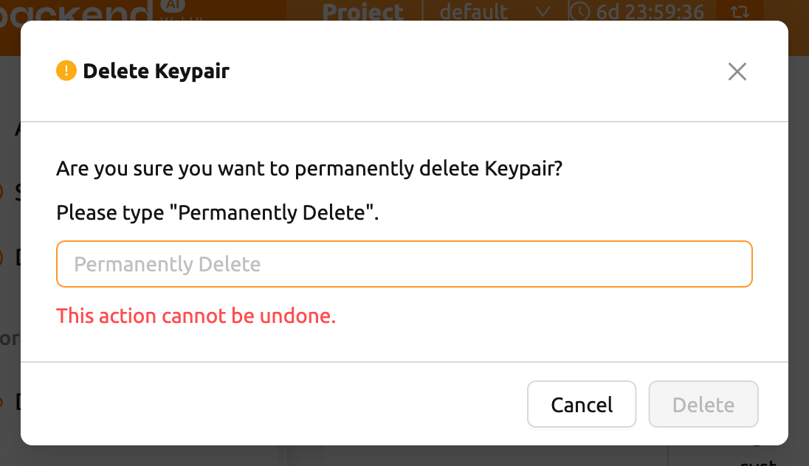
SSH keypair management#
When using the WebUI app, you can create SSH/SFTP connections directly to a
compute session. Once you sign up for Backend.AI, a public keypair is
provided. If you click the button on the right of the SSH Keypair Management
section, the following dialog appears. Click the copy button on the right to
copy the existing SSH public key. You can update the SSH keypair by clicking
the Generate button at the bottom of the dialog. SSH public/private keys are
randomly generated and stored as user information. Please note that the secret
key cannot be checked again unless it is saved manually immediately after
creation.

Backend.AI uses SSH keypair based on OpenSSH. On Windows, you may need to convert this into a PPK key.
Backend.AI WebUI supports adding your own SSH keypair to provide flexibility
such as accessing a private repository. To add your own SSH keypair, click the
Enter Manually button. You will then see two text areas labeled Public Key
and Private Key.
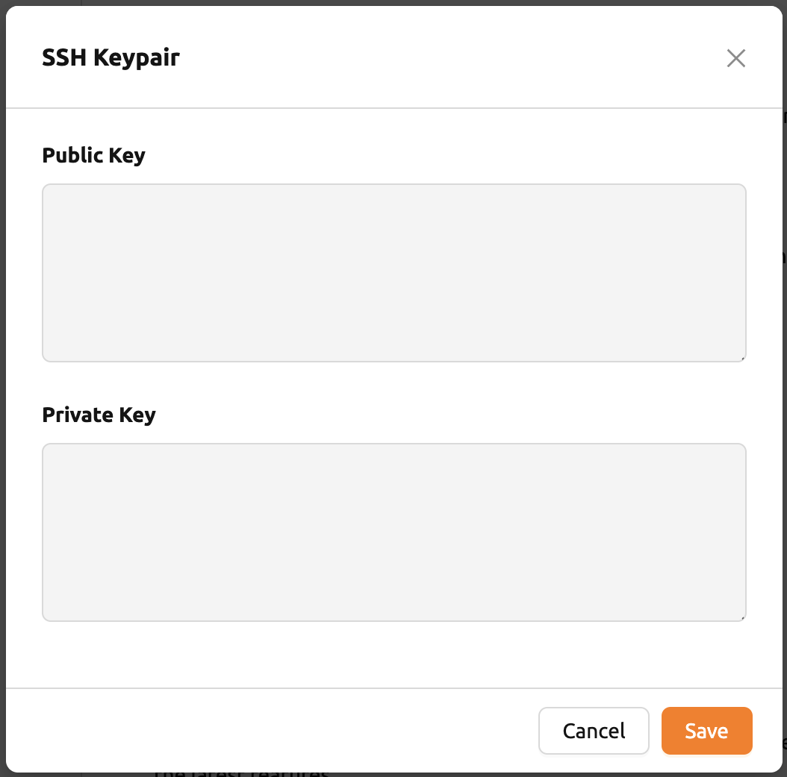
Enter the keys and click the Save button. You can now access your Backend.AI
session using your own key.

Max concurrent file upload limit#
Limits the number of files that can be uploaded simultaneously through the File Explorer. You can select a value between 2 and 5. The default value is 2.
Edit bootstrap script#
If you want to execute a one-time script just after your compute session starts, write down the contents here.
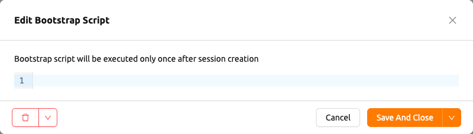
The compute session will remain in the PREPARING status until the bootstrap
script finishes its execution. Since you cannot use the session until it
is RUNNING, if the script contains long-running tasks, it might be
better to remove them from the bootstrap script and run them in a terminal
app.
Edit user config script#
You can write config scripts to replace the default ones in a compute
session. Files like .bashrc, .tmux.conf.local, .vimrc, etc. can be
customized. The scripts are saved for each user and can be used when certain
automation tasks are required. For example, you can modify the .bashrc
script to register your command aliases or specify that certain files are always
downloaded to a specific location.
Use the drop-down menu at the top to select the type of script you want to write
(.bashrc, .zshrc, .tmux.conf.local, .vimrc, or .Renviron) and then
write the content. Click Save And Close to save the script and close the
dialog, or open the arrow next to it and select Save Without Close to save
while keeping the dialog open. The buttons on the left of the dialog delete the
script or reset your unsaved changes.
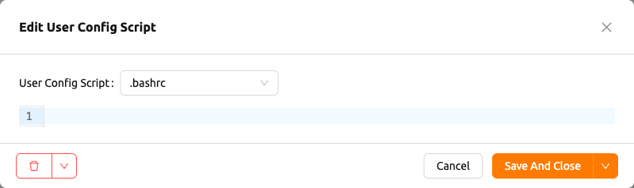
Experimental features#
Access new experimental features early -- these may change or be removed in future updates. Each feature is turned on with its Enabled checkbox.
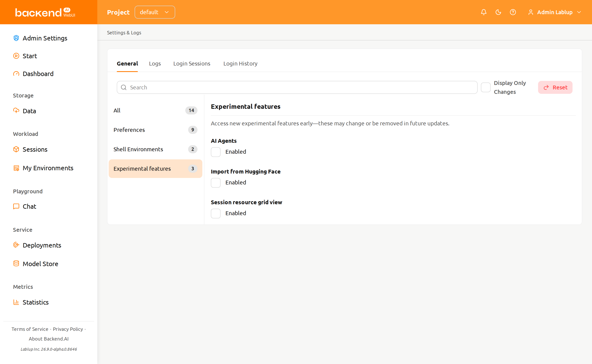
- AI Agents: Enable the AI Agents feature, which provides agent-based AI capabilities within the WebUI. When turned on, AI agent functionality becomes available for use in your sessions.
- Custom dashboard panels: Lets you add your own custom panels to the Dashboard page, each showing a data source you choose, narrowed by a condition you define. The panels appear only while this feature is enabled; turning it off later hides them without deleting them, and turning it back on restores them exactly as they were. See Custom Panels for how to add and manage them.
- Import from Hugging Face: Adds an Import Hugging Face Model tab to the Start From URL dialog on the Start page, so you can import a model from Hugging Face directly into a model folder. The tab appears only when model deployment is also available in your installation.
- Session resource grid view: Adds a View mode toggle -- Table or Grid -- above the session list on the Sessions page and on the Admin Session page. Grid replaces the table with one cell per session, colored by the session's live resource utilization. The toggle appears only while this feature is enabled; for the grid's own controls, see Session List View.
Logs tab#
Displays detailed information of various logs recorded on the client side. You can visit this page to find out more about errors that occurred. You can search and filter error logs, refresh the list, and clear all logs by clicking the Clear Logs button at the top right.
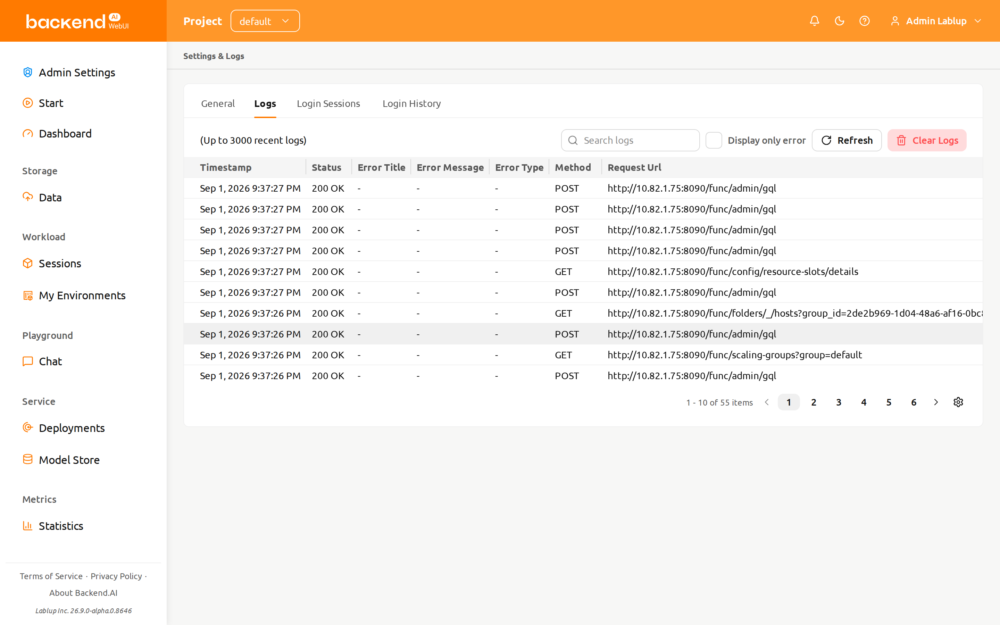
If you only have one page logged in, clicking the Refresh button may not seem to work properly. The Logs page is a collection of requests to the server and responses from the server. If the current page is the Logs page, it will not send any requests to the server except when explicitly refreshing the page. To check that logs are being stacked properly, open another page and click the Refresh button.
If you want to hide or show certain columns, click the gear icon at the bottom right of the table. A dialog will appear where you can select the columns you want to see.
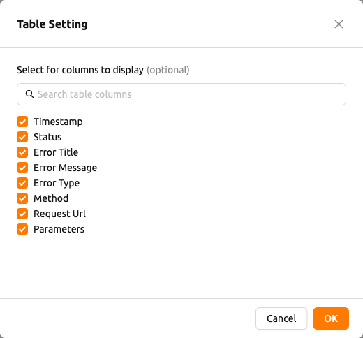
Login Sessions tab#
The Login Sessions tab lists the login sessions currently associated with your account — one entry for every place where you are signed in to Backend.AI. Use it to review where your account is in use and to sign out a session you no longer need.
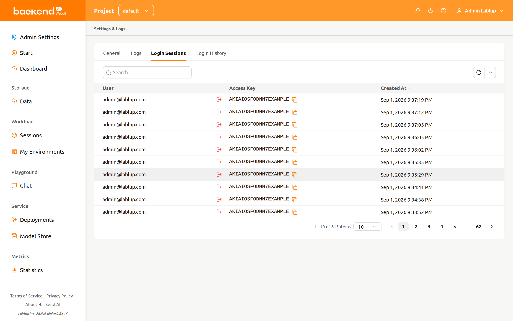
The table includes the following columns:
- User: The email address of the account that owns the login session.
- Access Key: The access key the login session authenticates with. Click the copy icon to copy it.
- Created At: When the login session was created. Click the column header to sort by this column.
Filtering login sessions#
Use the filter above the table to narrow down the list:
- Access Key: Shows only the login sessions whose access key contains the text you enter.
- Created At: Shows only the login sessions created after (or before) the date and time you select.
Use the pagination controls below the table to move between pages and to change how many rows are shown per page.
Revoking a login session#
Each row provides a Revoke Session action next to the email address in the User column.
- Click Revoke Session on the row you want to end
- Check the confirmation prompt, which shows the access key of that login session
- Click Revoke
The list reloads and the message "Login session revoked." is displayed. If the login session cannot be revoked, "Failed to revoke login session." is shown instead.
Revoking a login session signs it out immediately. If you revoke the login session you are currently using, you have to log in again.
Login History tab#
The Login History tab shows the login attempts recorded for your account — successful sign-ins, failed attempts, and login session events such as logout or expiry. This tab is read-only; there are no actions on the rows.
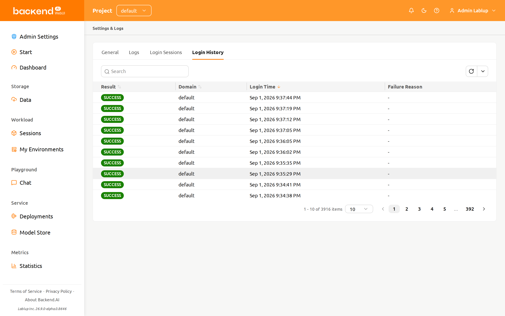
The table includes the following columns:
- Result: The outcome of the login attempt, shown as a color-coded tag. You can sort by this column.
- Domain: The domain the login attempt was made against. You can sort by this column.
- Login Time: When the login attempt was recorded. You can sort by this column.
- Failure Reason: Additional detail reported for a failed attempt. Shows
-when there is none.
Result values are shown exactly as the server reports them (for example,
SUCCESS or FAILED_INVALID_CREDENTIALS) and are not translated.
Result values#
| Result | Color | Meaning |
|---|---|---|
| SUCCESS | Green | The sign-in succeeded |
| FAILED_INVALID_CREDENTIALS | Red | The email address or password was wrong |
| FAILED_USER_INACTIVE | Red | The account is not active |
| FAILED_BLOCKED | Red | The sign-in was blocked |
| FAILED_PASSWORD_EXPIRED | Red | The account password has expired |
| FAILED_REJECTED_BY_HOOK | Red | The sign-in was rejected by a server-side hook |
| FAILED_SESSION_ALREADY_EXISTS | Red | A login session already exists for the account |
| LOGOUT | Gray | The login session was ended by signing out |
| REVOKED_BY_ADMIN | Yellow | An administrator revoked the login session |
| REVOKED_BY_USER | Gray | You revoked the login session yourself |
| EVICTED | Yellow | The server evicted the login session |
| EXPIRED | Gray | The login session expired |
Filtering login history#
Use the filter above the table to narrow down the list:
- Result: Shows only the entries with the result you select from the list of values above.
- Domain: Shows only the entries whose domain contains the text you enter.
- Login Time: Shows only the entries recorded after (or before) the date and time you select.
Use the pagination controls below the table to move between pages and to change how many rows are shown per page.